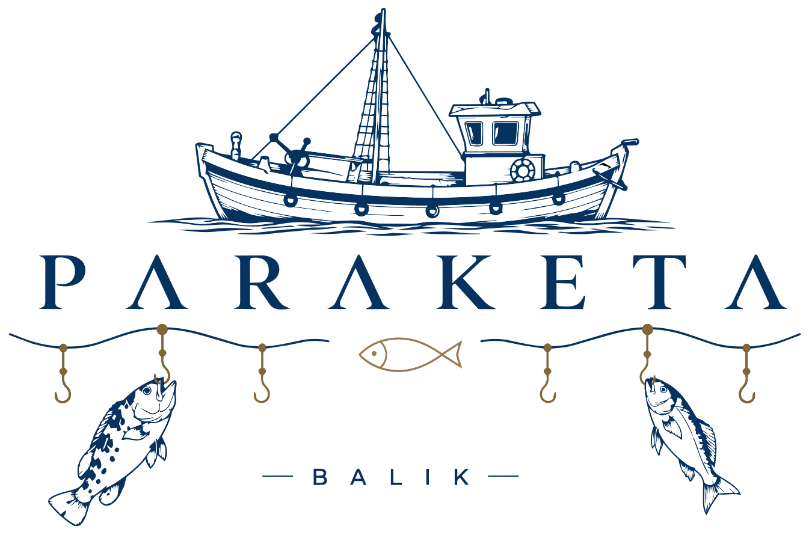

Menümüz çok yakında burada
Yeni menümüzü hazırlıyoruz. Bu arada siparişiniz için garsonumuzdan yardım isteyebilirsiniz.
Afiyet olsun
Yeni menümüzü hazırlıyoruz. Bu arada siparişiniz için garsonumuzdan yardım isteyebilirsiniz.
Afiyet olsun